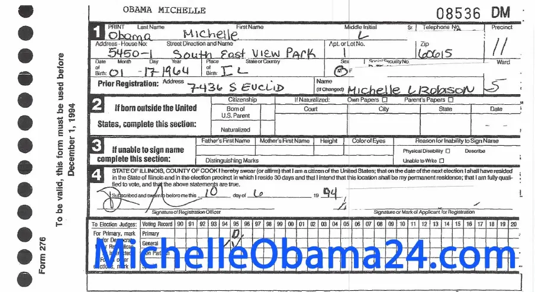

ARTICLE #004
A
VERY UNLIKELY
CONSPIRACY THEORY
OF
PRESIDENTIAL PROPORTIONS

PUBLISHED IN THE YEAR MMXXIII
The Background
For a while now, in niche conservative circles of American political discourse a theory has been floating around that sounded so absurd that I never even took the time to consider why how it came up in the first place. That is the theory of Michelle Obama being a trans woman, born biological male. All you would see being flung about surrounding this theory would be some slip-ups by Barack, calling the first lady "Michael" instead of Michelle, and "boner pics". But one piece of information I wasnt made aware of was that between 1994 and 2008 Michelle was registered to vote in Illinois, with her record showing she clearly circled M under Sex. 𐦀𐦀.  Is scan believable? Probably not, I could not find a clean version of it so this will have to do. But it got my brain thinking. So I came up with my own, equally unhinged but slightly more likely theory as to what this could mean.
The Theory
I want to begin by saying I only about 1% believe the theory I came up with myself, but in the unlikely chance that it is actually true, I would like it to be documented here that I thought of it first. So what is it?
Well I dont believe that Michelle Obama is a biological man. There is too much out there to contradict that theory. So what if instead of being a trans woman, Michelle was instead, at least for a period of time, a trans man? Now hear me out. If the voter registration card IS in fact real, AND the children are biologically those of Barack and Michelle, then this is open as a possibility. It would not make sense for a Harvard educated law student to make such a mistake when it comes to a form. This would also explain Barack's slip-ups. The Obamas were hanging out in quite progressive circles during their university years, so it would not be impossible for Michelle to have know of, and be favorable to, transition for those with gender dysphoria.
Is it not possible then, that a young Michelle Obama may have encountered gender dysphoria in her own life, and decide to socially transition in the early 90s, in her group of friends, including to her husband Barack? Furthermore, Barack would have then aided Michelle, by using her newly adopted name of Michael. Not that its much evidence (Tomboys exist) but in my research it seems during this period Michelle used to dress quite manly, and tended to keep her hair short. But why would she change this if that was the case? Surely, if she was socially transitioned for some 14 years (from 1994 to 2008) then she must have actually had dysphoria? Well, maybe she realised didnt, and just forgot to change the record until Barack ran for president. Or maybe she did have gender dysphoria, and when Barack decided to run for presidency, she realised his chances of winning were nearly null if her being a trans man went public. The environment just wasnt there in society for such a thing in 2008. Having a black president was already quite a large jump, and him being married to a trans man would have likely been way too much. So in a bid to help her husband, Michelle de-transitioned socially, and started going by Michelle again.
I just want this recorded here. The environent in America is much more open to such a coming out nowadays, and if the theory were to be true, I would expect it to happen in the coming years. But maybe not, the trans movement seems to be losing the battle as of late, and its possible that the experiemnt itself is coming to an end. Many to be seen.